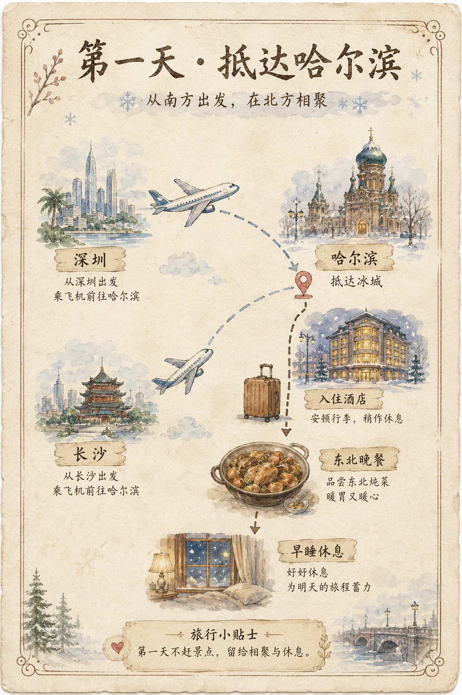
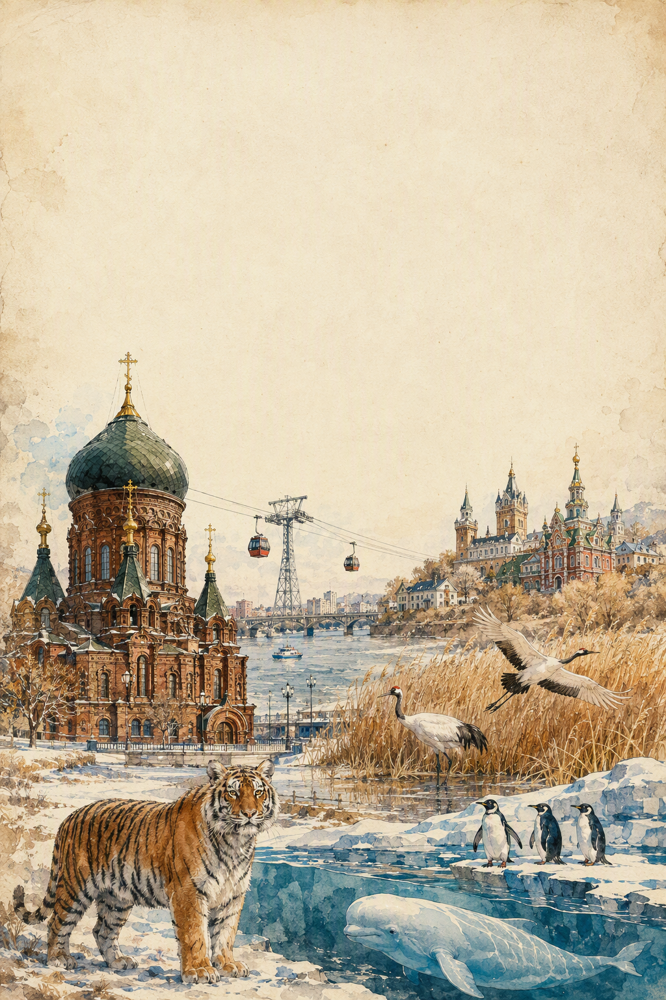
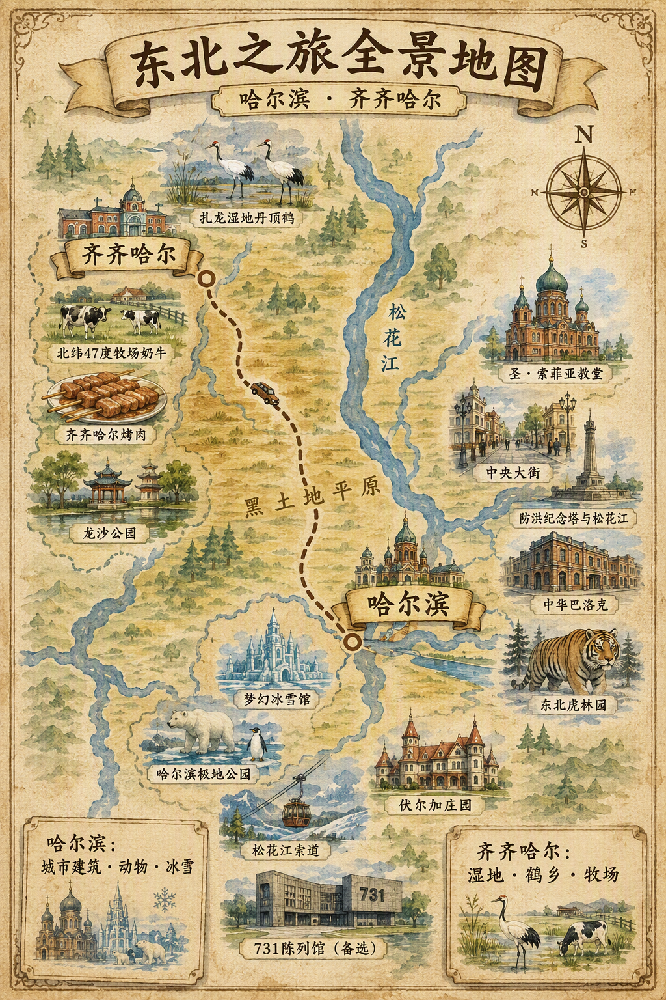
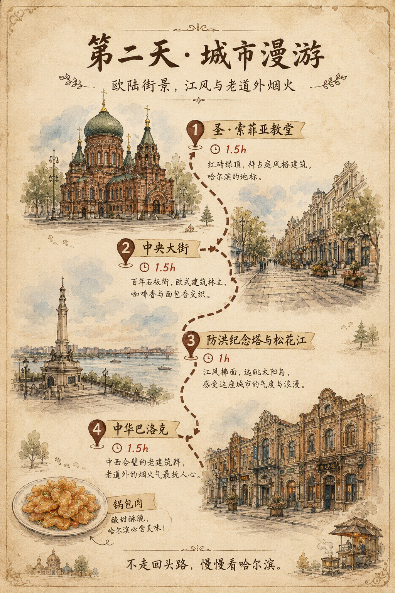
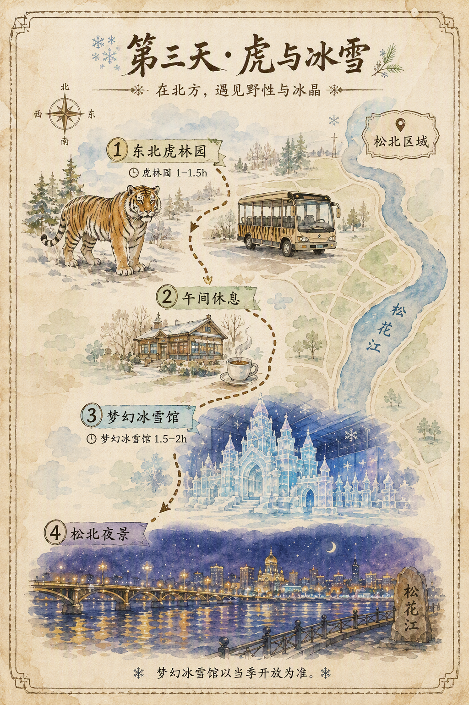
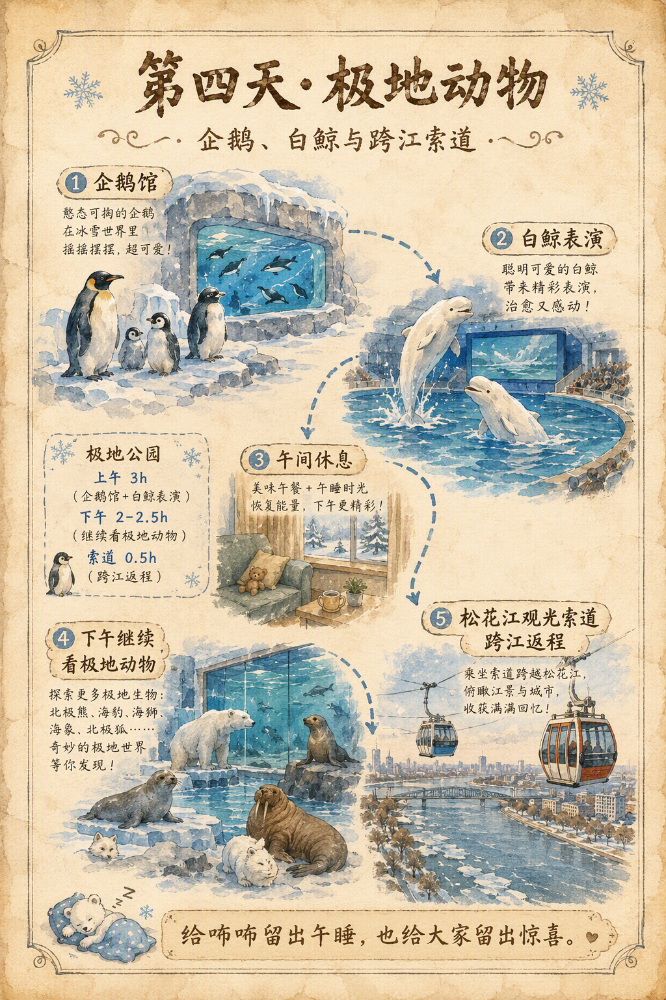
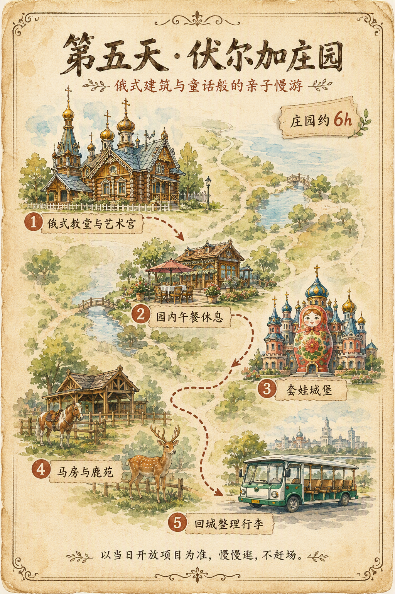
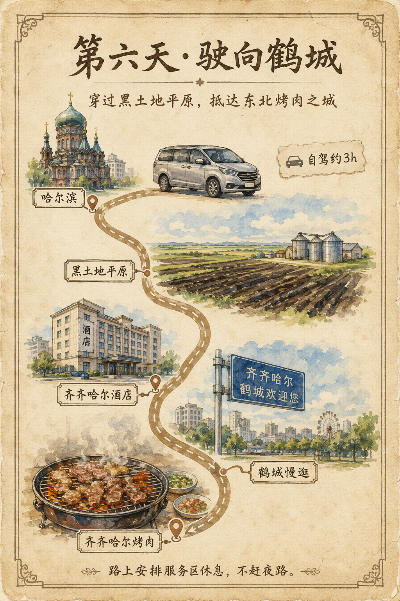
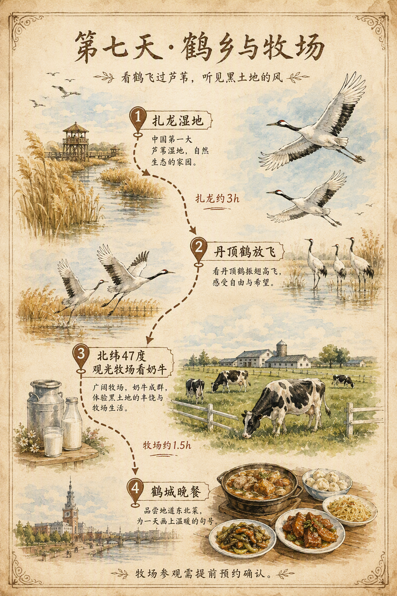
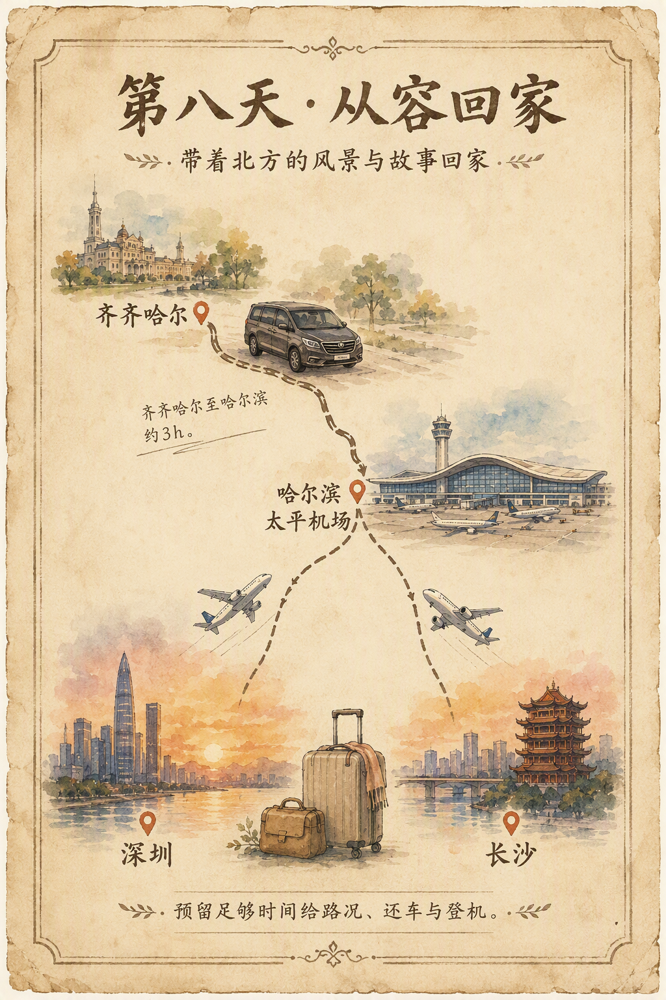

周六
抵达哈尔滨
深圳与长沙的家人在北方相聚。第一天不赶景点，把时间留给抵达、入住和一顿热乎晚餐。

第一程 · 行程规划中
从哈尔滨出发，走进黑土地、鹤乡与北方深秋。
哈尔滨 · 齐齐哈尔 · 黑土地与鹤乡

正在规划。 这次家庭旅行围绕深秋出发、轻松节奏、四位老人和咘咘展开。具体日期、路线与住宿会一起慢慢定下来，再成为最终行程。
东北之旅全景地图 · 初版

从哈尔滨的城市建筑、动物与冰雪，到齐齐哈尔的湿地、丹顶鹤与牧场；以整体路线看景点，避免来回折返。示意图非精确导航地图。
行程总览 · 待一起填写
| 日期 | 上午 | 下午 | 晚上 | 备选行程 |
|---|---|---|---|---|
| 周六出发 | 深圳、长沙分别出发 · 抵达哈尔滨 | 酒店入住 · 休息恢复 | 附近轻松晚餐 · 早睡 | 酒店周边散步 |
| 周日第二天 | 索菲亚教堂（1.5h）· 中央大街（1.5h） | 防洪纪念塔/江边（1h）· 中华巴洛克（1.5h） | 老道外东北菜 · 巴洛克夜景 | 酒店休息 |
| 周一第三天 | 东北虎林园（1–1.5h） | 梦幻冰雪馆（1.5–2h，待确认开放） | 松北晚餐 · 江北夜景 | 哈尔滨大剧院（0.5–1h） |
| 周二第四天 | 哈尔滨极地公园（3h） | 极地公园下午场（2–3h） | 松花江索道返程（约 0.5h） | 太阳岛（1–1.5h） |
| 周三第五天 | 伏尔加庄园（约 6h） | 展馆 · 套娃城堡 · 马房/鹿苑 | 回市区 · 整理行李、早休息 | 731陈列馆（2–3h） |
| 周四第六天 | 自驾哈尔滨→齐齐哈尔（约 3h） | 入住休息 · 慢逛鹤城（1h） | 齐齐哈尔烤肉 | 龙沙公园（1–1.5h） |
| 周五第七天 | 扎龙湿地 · 观鹤（约 3h） | 牧场参观 · 看奶牛（约 1.5h，待预约） | 东北菜 · 齐齐哈尔夜晚 | 龙沙动植物园（2–3h） |
| 周六返程 | 自驾齐齐哈尔→哈尔滨（约 3h） | 抵达机场 · 办理返程 | 回家 | 机场周边用餐 |
每日行程 · 初版草案
深圳与长沙的家人在北方相聚。第一天不赶景点，把时间留给抵达、入住和一顿热乎晚餐。

哈尔滨住宿 · 待决定
每日行程 · 初版草案
上午晚一点出发；咘咘午睡后，再从道里走向道外。全程按片区推进，不来回折返。

本日景点介绍
圣·索菲亚教堂位于哈尔滨道里区，是一座以红砖墙体、绿色穹顶和拜占庭式构图著称的原东正教教堂建筑。它所在的区域曾是近代哈尔滨俄侨活动集中的城市空间之一，因此不仅是一处拍照地标，也是一段中东铁路时期城市发展史的实物见证。爷爷奶奶到这里可重点看看穹顶、钟楼和红砖砌筑细节；广场较平坦，适合慢走和休息。上午光线柔和，建议以外观与广场为主，不必把时间花在排队上。
中央大街形成于近代哈尔滨城市扩展时期，最显著的特征是花岗岩面包石路面和两侧保存下来的折衷主义、新艺术运动等风格建筑。它并不只是商业步行街，也是阅读哈尔滨近代城市史最直观的一段路线。街道尽头的防洪纪念塔建于1958年，用以纪念哈尔滨人民战胜1957年特大洪水；塔前就是松花江畔。建议从教堂方向慢慢走一段，走累就进店休息；江边风大时，只看纪念塔和江景即可。
中华巴洛克历史文化街区位于老道外，是哈尔滨近代华商聚居和民族工商业活动的重要区域。所谓“中华巴洛克”，是指建筑临街立面借用了巴洛克式的曲线和装饰，但院落布局、砖雕纹样和生活空间仍带有中国传统民居的特点，因此被视为哈尔滨中西文化交汇的代表。这里与中央大街的外来侨民建筑气质不同，更接近“闯关东”时期的本地商业与市井生活。建议只走主街，顺便吃一顿老字号东北菜，不必深入小巷。
松北一条线。虎林园完整游览约一小时，午睡后再尝试室内冰雪体验。

本日景点介绍
东北虎林园位于松花江北岸，是以东北虎保护、繁育和科普展示为核心的野生动物园区，也是世界较大的东北虎人工繁育基地之一。园区的主要参观方式是乘观光车进入散放区域，游客可在车内观察东北虎、白虎和其他大型猫科动物，因此对腿脚不便的老人相对友好。它的教育意义在于让孩子认识东北虎与寒温带森林生态的关系。全程通常一小时左右；秋末气温较低，动物往往更活跃，但无需选择投喂或刺激项目。
梦幻冰雪馆是冰雪大世界园区体系中的室内冰雪体验空间，可将其理解为“在室内看冰雪艺术”。它的价值在于，在大型室外冰雪大世界通常尚未建成开放的10月底，仍能让家人看到冰雕、冰雪建筑和北方冬季的空间氛围。对老人而言，室内环境减少了江边寒风和长距离步行；对孩子而言，冰雪场景本身比单纯讲解更直观。参观以看场景、拍家庭照为主，约一到两小时足够。实际开放日期和闭馆时间务必以当季公告为准。
哈尔滨大剧院位于松北文化中心区，以白色流线形外观和湿地式景观闻名，是哈尔滨近年最具辨识度的现代建筑之一。它与老城的俄式建筑形成鲜明对照：不必专门进场看演出，也可仅在外部平台和周边短停，看看建筑在开阔江北环境中的形态。若梦幻冰雪馆未开放、当天仍有体力，可作为顺路备选；天气不好则直接取消。
极地公园安排完整一天，不再叠加梦幻冰雪馆；下午继续看表演、企鹅、白鲸及园区内容，按咘咘午睡灵活调整。

本日景点介绍
哈尔滨极地公园位于太阳岛区域，是以极地海洋动物展示和演艺为主要内容的主题园区。园内的企鹅、白鲸、海象等动物展示，以及围绕白鲸和企鹅安排的定时演出，是最受家庭游客欢迎的内容。对于爷爷奶奶而言，它的优势是室内比例高、暖气充足、座位和洗手间方便，可以避免在深秋户外久走；对于咘咘而言，动物和演出比单纯看展览更容易理解。建议按当天节目单安排，而不是逐馆赶路，完整安排一天最从容。
太阳岛位于松花江北岸，是哈尔滨最早成名的城市休闲风景区之一，因江岛、湿地与近代避暑文化而著名。深秋并非赏花季，但平坦开阔的林地、江景和安静的节奏，适合在极地公园后只选一小段慢走。它是备选，不与极地公园叠加赶场；若孩子午睡较晚、天气转冷或大家已疲惫，直接乘索道返程更合适。
东郊单独一天。园区大，不和其他城区景点混排；以摆渡车和展馆为主，按开放项目取舍。

本日景点介绍
伏尔加庄园位于阿什河畔，以俄罗斯历史建筑风格、艺术展陈和园林景观为主要内容，是哈尔滨中俄文化交流主题旅游的重要场所。它与中央大街的区别在于：中央大街体现近代城市街区，伏尔加庄园则以教堂、艺术宫、民俗园和河畔建筑组合成一座庄园式空间。景区较大，但可利用摆渡车减少步行，适合老人慢游。咘咘可看套娃城堡、马房或鹿苑等互动项目。深秋以建筑和展馆为主，水上项目与部分户外互动须以当天开放为准。
陈列馆位于哈尔滨平房区，依托侵华日军第七三一部队旧址建设，是揭示日本细菌战罪行的重要历史遗址类场馆。馆内文献、实物和证词内容严肃沉重，对希望了解近代东北史的成人很有价值；但不适合咘咘作为亲子主项目。若老人或家长希望前往，应由其他成人陪咘咘安排轻松活动，并且单独成行，不与伏尔加庄园串联，以免路程和情绪负担都过重。
从哈尔滨自驾穿过黑土地平原抵达齐齐哈尔。当天只安排抵达、休息与烤肉，不赶景点。

本日景点介绍
龙沙公园位于齐齐哈尔市中心，是当地历史较久、最具代表性的城市公园之一。园内以湖面、亭台、林木和龙沙动物园旧址相关景观为主要内容，风格朴素，能看到这座松嫩平原城市的日常生活。它不需要专门赶去打卡：若抵达齐齐哈尔后大家精神尚好，可沿平坦主路走一小段、坐坐看看；若旅途疲惫，就直接在酒店休息，把时间留给次日的扎龙湿地。
扎龙湿地、丹顶鹤放飞、牧场看奶牛和鹤城晚餐，是这段旅程最有东北平原特色的一天。

本日景点介绍
扎龙生态旅游区位于齐齐哈尔市东南部，是以芦苇沼泽湿地和鹤类保护闻名的自然保护地，也是中国最具代表性的丹顶鹤栖息、繁育区域之一。景区的核心体验是野化丹顶鹤放飞：鹤群从芦苇与湿地上空掠过，比在普通动物园隔栏看鸟更能体现湿地生态。参观应围绕当天公布的放飞场次安排，以观鹤台、摆渡车和最平缓栈道为主，不追求走完整片湿地。秋末芦苇色彩转淡，但开阔、安静的北方湿地反而很有特色；请注意保暖防风。
齐齐哈尔地处北纬47度附近的松嫩平原，是东北重要奶源产区之一。若能预约进入飞鹤或其他开放牧场，参观重点应是奶牛饲养、牧草与牛奶生产的基本过程，让孩子把餐桌上的牛奶和真实的农业环境联系起来。此类参观通常受接待日期、年龄和预约规则限制，因此只作为可实现时的加分项目；如未能入场，不必在郊外临时奔波，可改为回市区休息或安排龙沙动植物园。
龙沙动植物园是齐齐哈尔较大的综合性动物展示园区，适合作为扎龙放飞因天气取消、牧场无法预约或孩子仍想看动物时的替代方案。它的意义与扎龙不同：扎龙看的是湿地生态与丹顶鹤野化放飞，这里则是常规动物园的集中展示。若启用，建议只选孩子最感兴趣的区域，不必全园走完；老人可在入口附近休息等候，避免把备选项目变成额外负担。
从齐齐哈尔回到哈尔滨机场，预留路况、还车与登机时间，带着北方的风景回家。

正在形成的旅行节奏
从深圳和长沙出发的家人在北方城市相聚。第一天只留给一顿热乎的晚饭和一个早早的夜晚。
街道、江边、动物、俄式建筑，以及充足的休息。每天有一件最期待的事，就已经很好。
去往第二座更安静的城市：开阔的黑土地平原、湿地里的鹤，还有一桌东北烤肉。最终路线仍在一起讨论。
回到哈尔滨，给天气、午睡、行李和第二天的机场留出足够余地，不赶路，也不赶时间。
不追赶长长的清单，只留下一件值得记住的事，也给当天的心情留出空间。
动物、湿地、树和开阔的天空，都不必用小朋友的脚步和老人的膝盖去交换。
热乎的饭、午睡、熟悉的节奏和从容抵达，与每一处目的地同样重要。